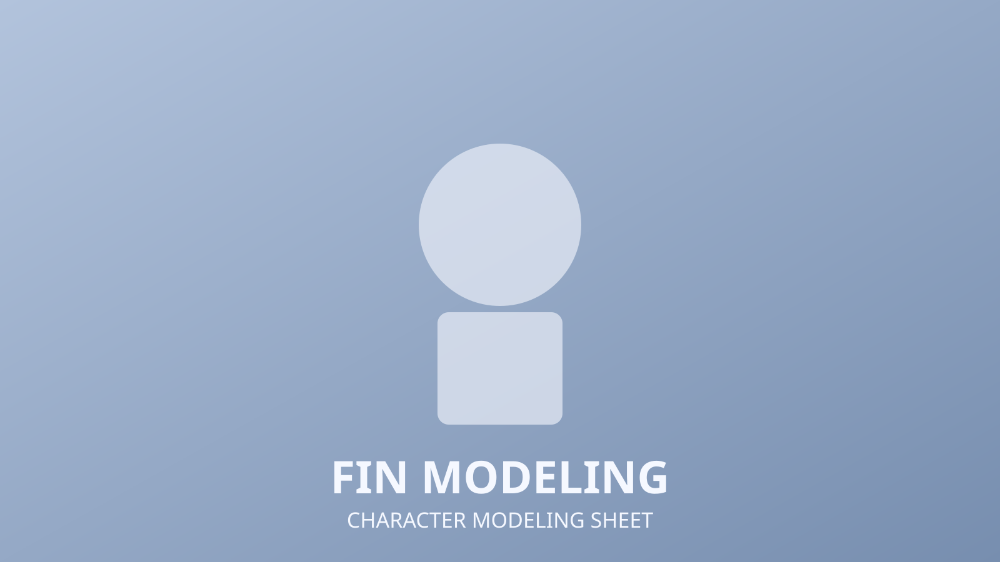
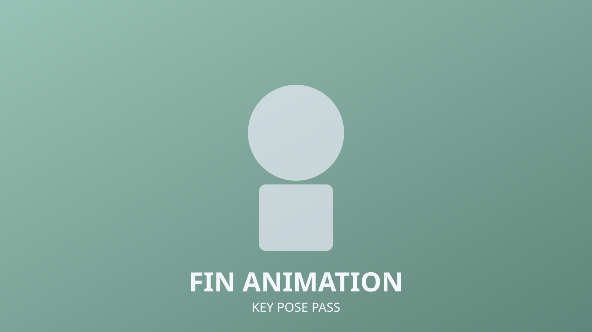

Fin
3D
Character Modeling
Animation
Fin is a stylized 3D character focused on silhouette clarity, clean topology, and expressive animation timing. This page shows the modeling pass and an animation test from the same production track.

Character Modeling
Started with body proportion blockout, then refined facial edge loops for deformation and cleaner expression shapes. Final meshes were optimized for animation-friendly rigging.
Animation
Motion tests focused on readable pose transitions and weight transfer in fast direction changes. The loop below highlights timing and spacing choices for personality beats.

